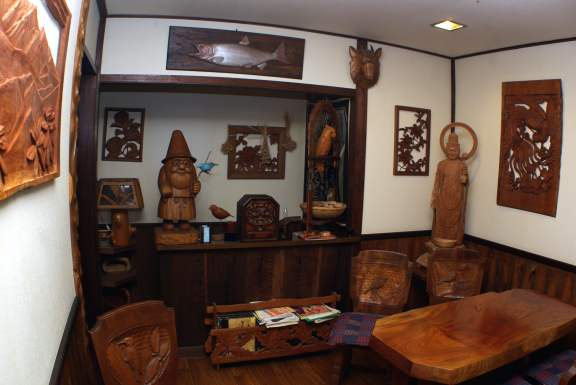

今から四百五十年もの昔、岐阜に住む一人の武士がおりました。
その名は、奥田孫左衛門。
孫左衛門は長い間、胃腸の病に苦しみ、お城勤めもままならない日々を過ごしていました。そんなある夜、彼が日頃から信心していた「薬師如来」から夢のお告げを受けました。

代々伝わる家宝「温泉湯元開源由来記」
今から四百五十年もの昔、岐阜に住む一人の武士がおりました。
その名は、奥田孫左衛門。
孫左衛門は長い間、胃腸の病に苦しみ、お城勤めもままならない日々を過ごしていました。そんなある夜、彼が日頃から信心していた「薬師如来」から夢のお告げを受けました。
代々伝わる家宝「温泉湯元開源由来記」
温泉発見の由来となった「薬師如来様」は、現在も湯屋温泉飲泉場に安置され、静かに時を見守っています。 また、館内には「観音菩薩様」をはじめ、主自らが魂を込めて制作したウッドクラフトの数々が飾られ、木の温もりが訪れる人々を優しく包み込みます。

ウッドクラフトが並ぶ個室食事処には、有線LANケーブルをご用意しております。
歴史ある建物の静寂の中で、ご自由にお使いいただけます。
開源以来、大切に守られてきたこの湯。奥田屋の看板に刻まれた歴史は、今も静かに時を刻み続けています。

四百五十年前の武士が救われたように、
現代を生きる皆様の心と体も、
このお湯が優しく解きほぐします。